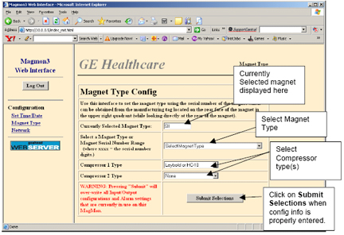
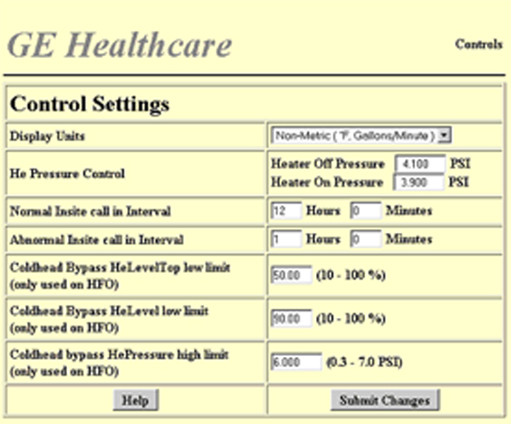
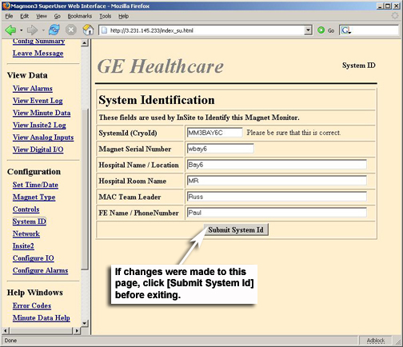
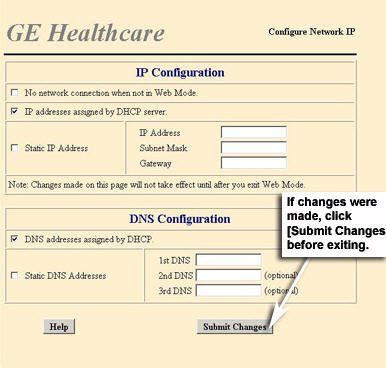
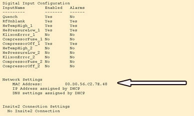
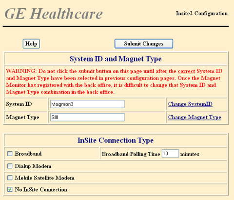

GE Exclusive Use Only
Direction 5670000, Rev# 1
Optima MR450w 1.5T Service Methods
Module Version 5.0, Version Date 11/5/09
GE Exclusive Use Only |
The Set Time/Date page allows the setting of the Magmon3’s internal time and date. This process cannot be done remotely and must be done via the laptop connection. The internal time and date are used to timestamp the minute data and the event log items. The time zone setting is needed to synchronize the MagMon3’s time to the back office time.
| NOTE: | The Magmon3 does not automatically change settings when daylight savings time goes into effect. |
SeeIllustration 1 for details on these steps
Set the Date, Time, Month, Year, Hour, and Minutes by clicking on each drop-down menu and making a selection.
Set the Time Zone by selecting the time zone for your area from the drop-down menu. For example, if you are in Germany, the selection is GMT +1.
Illustration 1: Set Time and Date

The Magnet Type page configures the Magmon3 to one of the pre-defined magnet types. The number of sensors, type of compressors and alarm parameters will vary between magnet model types, so the magnet type selection is a key element in the operation of the magnet and magnet monitor. The Magnet Type must be configured before any attempt do to an InSite Checkout is performed.
Select the magnet type from the drop-down menu that most closely matches the system type that Magmon3 will be monitoring. See Illustration 2. If you are unsure what magnet type to select, contact the Magnet Support Team and your regional Online Center.
Select the proper compressor type from the noted menu. See Illustration 2. Compressor 2 type should only be used when there are two compressors connected to the same magnet.
Click [Submit System Type] after identifying the magnet type.
| ||||
| RB magnets must be configured as LCC-RB, not LCC. | ||||
Illustration 2: Magnet Type

The Controls page allows the setting of several miscellaneous items. See Illustration 3.
| ||||
| The presets for these values shall not be changed unless instructed by the Online Center. | ||||
Display Units: Display water flow and temperature in metric or non-metric. Default is metric.
He Pressure Control: Heater on/off control points for He Pressure control in the magnet’s helium vessel. Default for LCC systems is 4.1 psi (Heater OFF Pressure) and 3.9 psi (Heater ON Pressure). Default for HFO systems is 0.9 psi (Heater OFF Pressure) and 1.1 psi (Heater ON Pressure). Default for RB and DVw systems is 3.99 psi (Heater ON pressure) and 4.01 psi (Heater OFF pressure).
| NOTE: | This feature is required on magnets with Coldheads performing as recondensors. |
InSite Call in Intervals: Controls how often the Magmon3 uploads data to the back office. Default is 12 hours.
Abnormal InSite Call-in Intervals: Controls how often the Magmon3 calls in to the back office when in the alarm mode.
| NOTE: | Use the following call-in interval time settings for alarms: 0.7T HFO = 30 minutes, LCC / LCC-RB / LCC300 = 1 hour, All other magnets = 2 hours. |
Compressor Type: The compressor type selection configures the software for correctly interpreting the logic of the compressor status signals. Failure to configure this correctly will result in the Magmon3 being in constant alarm.
| NOTE: | The choices are None, Sumitomo water-cooled or HC-10, Sumitomo air-cooled, Leybold or Balzers. |
The following three items are required for the operation of the coldhead cycling feature used on the 0.7T High Field Open Magnet. These items should be ignored for all other magnet types. The Magmon3 software will respond to entries made here only if the selected magnet type is 0.7T HFO magnet.
| Item | Default |
|---|---|
| Coldhead Bypass HeLevelTop low limit (only used on HFO) | 50.0 |
| Coldhead Bypass HeLevel low limit (only used on HFO) | 90.0 |
| Coldhead Bypass HePressure high limit (only used on HFO) | 6.0 |
Click [Help] for more information.
If changes were made to any of the control settings, click [Submit Changes] before exiting the Controls page.
Illustration 3: Control Settings

The System Identification page allows the user to configure all site identification information. The fields on this page uniquely identify the system when Magmon3 registers with the back-office. It is very important to enter the correct System ID or the back-office will not be able to match the System ID to the one assigned to the customer in one of GE’s three databases.
Each of these databases have unique guidelines for how information is entered, so it is very important to understand which database is used to support your customer.
The CAPS database is used by Japan.
The CARES database is used by the Americas, Australia, New Zealand, and the rest of Asia.
The MUST database is used by Europe, the Middle East, and Africa.
SeeIllustration 4 for an example of the System Identification page.
| ||||
| All information must be completed on this page before an InSite Checkout is performed. | ||||
Enter the System ID. This will be the Cryogen ID for the MRI system.
| NOTE: | The Cryogen ID guideline for Magmon3 sites in the CARES
database for Australia, New Zealand and the rest of Asia is to add
suffix MM3 to the end of the Primary System ID. Example: Primary System ID in CARES Database is 0910274017 + MM3 = Cryogen ID: 0910274017MM3. |
| NOTE: | The CAPS database in Japan does not use a System/Cryogen ID. The Online Engineer in Japan utilizes a System ID tool and assigns a System/Cryogen ID for the Magmon device, which is then maintained in the VOLC database. You must contact the Online Engineer in Japan and get a System/Cryogen ID assigned. |
| NOTE: | The Cryogen ID guideline for Magmon 3 sites in the MUST
database is to add the suffix SMM3 to the end of the Primary System
ID. Example: Primary System ID in MUST Database is 00192MRS01 + SMM3 = Cryogen ID: 00192MRS01SMM3. |
Enter the Magnet Serial Number.
For all GE Florence magnets, the magnet serial number is located on the rear end flange of the magnet. For 7.0T GE Oxford magnets, the magnet serial number is located just above the vacuum pump out port.
Enter the Hospital / Clinic Name.
Enter the Room Name.
The customer designates this name. Example: MR Scanner #3.
Enter the MAC Team Leader name.
If you are not sure who your MAC Team Leader is, contact your regional Online Center for help.
Enter the FE Name / Phone Number.
This will be the Primary Field Engineer assigned to the site.
Click [Submit System ID] when all fields have been completed.
Illustration 4: System Identification

A network connection must be made between the Magmon3 and the High Field Open (HFO) host computer LAN Port 7. Go to Appendix Section 1, Prerequisite Information for Non-Proprietary Operation and obtain network information for HFO Systems.
| NOTE: | This is the communication path for supporting the Coldhead Switching feature on the HFO system. |
Click [Network].
Enter the information provided by the customer's network administrator for IP Configuration and DNS Configuration.
Click [Submit Changes].
| ||||
| On the IP Configuration page, make sure the No Network connection when not in Web Mode box is not checked. | ||||
SeeIllustration 5 for an example of the Configure Network IP page.
Illustration 5: Network Settings

The Configure Network IP page configures the Ethernet interface of the Magmon3. The Magmon3 is designed to connect directly to the Internet without the need for a Virtual Private Network (VPN). In most cases, a hospital network administrator will have to be consulted to get the correct settings. Refer to the InSite2 Information Packet for Network Administrators in the appendix of this manual. This document is very useful in helping the customer’s network administrator understand the connectivity with GE equipment and how InSite 2.0 operates.
Another important aspect of Magmon3 is that it cannot be logged into remotely. The InSite 2.0 agent loaded on the device is designed to initiate the contact with the back-office server. When in idle mode it cannot be pinged by other devices on the network.
In order for someone to directly connect to the unit they must be on site and have physical access to the unit in order to place it into web mode, which is password protected. The unit will remain in web mode for 45 minutes allowing the user to directly connect a laptop to it for configuration purposes before breaking the connection.
Before you begin, make sure to complete the Prerequisite Information sheet located in the Appendix section of this document. At this point, you will need to contact the customer’s network administrator. The network administrator will provide you with Static IP (otherwise known as Fixed IP) information or confirm that DHCP is used at this facility. DNS and Proxy Server Config should also be discussed with the network administrator. If DNS and or Proxy servers are used at this site information / addresses should be obtained at this time.
| ||||
| Important! For European sites using an InSite1 Broadband solution refer to Section 6 of Appendix for proper site configuration. | ||||
| ||||
| Important! If the network configuration for the site requires
a Subnet Mask address, then it must be entered in a specific way.
For Magmon3 devices operating with 1.41 through 1.54 software, the
user must enter the Subnet Mask string with 3 digits in each octet.
For example: 255.255.000.000 not 255.255.0.0. Failure to enter the Subnet Mask string in this manner will result in a communication failure with the Back Office. This issue is corrected in software revision 1.55 and the additional zeros are not required. | ||||
SeeIllustration 6 for an example of the Configure Network IP page.
Illustration 6: Network Settings

The network administrator may request the MAC Address for the Magmon3 device. This can be viewed by performing the following steps:
Connect a laptop to a Magmon unit, running in Proprietary mode. Refer to Connecting a Laptop to the Magmon3.
Select the Config Summary option. After displaying the screen, look at the Network Settings section for the MAC Address. SeeIllustration 7 for an example.
Illustration 7: MAC Address

Check this box if a modem is to be used, or no Internet connection is available at the site. If the No Network Connection when not in Web Mode box is selected, the DHCP and Static IP check boxes will be blanked. If No Network Connection when not in Web Mode is checked, no further action is required on this page.
| ||||
| A network cable must be installed for all 0.7T HFO magnets for communication between the Magmon3 unit and the host computer to support Coldhead Switching. This box should never be checked on an HFO system. | ||||
Dynamic Host Configuration Protocol (DHCP), a protocol for assigning dynamic IP addresses to devices on a network. With dynamic addressing, a device can have a different IP address every time it connects to the network. In some systems, the device's IP address can even change while it is still connected. DHCP also supports a mix of static (otherwise known as fixed) and dynamic IP addresses.
DHCP allows Magmon3 to auto-configure its IP settings by negotiating with a DHCP server on the local network.
If the local network does not have a DHCP server, then the Magmon3 must be configured with static IP addresses. If the IP address assigned by DHCP server check box is selected, go to the DNS configuration section of this web page. When the IP Addresses assigned by DHCP server check box is selected, the No Network Connection when not in web mode and the Static IP Address check boxes will be blanked.
If DHCP is not used, the network administrator will provide a static IP address, subnet mask, and a gateway address (gateway may not be necessary). Click the Static IP Address box and enter the provided Static IP Address information. When the Static IP Address box is selected, the No Network Connection when not in web mode and IP address assigned by DHCP server check boxes will be blanked.
A Gateway is node on a network that serves as an entrance to another network. In enterprises, the Gateway is the computer that routes the traffic from a workstation to the outside network that is serving the Web pages.
DNS Addresses Assigned by DHCP
Domain Name Server (DNS) is a protocol that allows the Magmon3 to translate URLs (such as WWW.GE.COM) into an IP address. If the local network does not provide access to a DNS server, which typically occurs through a proxy server, then all URL entries on the InSite2 configuration page must be entered as IP addresses instead of as URLs. If DNS is not available at this site, you will need to call the Online Center for the latest server IP address. The use of the IP address should be avoided unless no other option is available to use DNS.
| ||||
| In the case where no DNS is available and IP addressing is used: When the back-office changes the Server IP address, the connection from the magnet monitor to the back-office will be lost until the new IP address to the server is entered into the magnet monitor. | ||||
After completing all the appropriate entries on the screen you must click [Submit Changes] before leaving this screen or the entries will be lost.
The InSite2 page controls how the Magmon3 will send data to the back-office. See Illustration 8.
The System ID and Magnet Type fields will display the information that was entered previously on those screens (See Section 2, Magnet Type, and Section 4, System Identification). If the data is incorrect, then it must be corrected on the relevant page before continuing.
Select the appropriate connection type from this list:
Broadband: Normal setting for most installations.
Dialup Modem: To be used if no other option is available to connect via broadband.
Mobile Satellite: Mobile installations with satellite modem only.
No InSite Connection: Connection to broadband or modem is not available.
Enter information into each field as follows:
Enterprise URL: https://us1-ws.service.gehealthcare.com:443
| NOTE: | This is the web address that the Magmon3 uses to connect to the back-office, and is not the URL for the back-office user interface. |
Protocol: Select HTTPS from the drop-down menu.
A Proxy Server sits between a client application, such as a Web browser, and a “real” server computer. It intercepts all requests to the real server, checks to see whether it can fulfill the request. If not, it forwards the request to the real server.
The fields in this section are used for broadband sites only. The customer's network should have a single device that connects all the PCs in the building to the Internet. The Magmon3 communicates to the back-office (at the Online Center) over the Internet, so the Magmon3 must be provided with the IP address or URL of the Internet proxy device for the building network. The name or IP address of this device must be obtained from the customer’s network administrator. Some proxies require a Username and Password before they will allow a device to access the Internet. The network administrator must provide this data if required.
Proxy Server Parameters (FOR USE WITH MODEM ONLY)
Proxy: Box selected
Name/IP: 172.25.1.251
Port: 8002
Username: Leave blank.
Password: Leave blank.
These fields are only used for dial-up modem connections. If a broadband connection is not available, and a modem is the only option, these fields must be completed.
Phone Number: Insert the Online Center phone number (in the US, 877-834-4020). Call the Online Center for the number appropriate for your area.
User Name: Type I2-xxxx (Replace xxxx with your Cryo ID)
Password: Type insite2
Country/Region: Select from the drop-down menu; the next fields will auto-fill. Do not change the defaults unless instructed to by the Online Center.
Country/Region Code: Auto-filled when Country/Region is selected.
Modem Default Init String: Auto-filled when Country/Region is selected.
Dial String: Auto-filled when Country/Region is selected.
Insite2 Retry Number: Auto-filled when Country/Region is selected.
| NOTE: | Don't forget that Proxy Server Parameters are required with the modem!!! |
Illustration 8: InSite2 Settings

| ||||
| Perform an InSite Checkout. Contact your regional Online Center for specific details. | ||||
It is Mandatory after finishing the Magmon3 configuration to call your regional Online Center Magnet Support Group to do a database checkout. This is especially important if you are upgrading from an EDM or a Magmon2 (SHeM) to Magmon3. You will need to provide the following information, so make sure to have it handy:
Magmon3 Cryogen System ID
Magnet Type
Country
Connection Type
Make sure all of the configurations are complete before performing an InSite Checkout. You must be connected to the Magmon3 unit with a laptop in order to review the configurations.
Connect to the Magmon3 using a laptop. See Connecting a Laptop to the Magmon3 for more information.
Select Config Summary to display the configurations. If all configurations are complete, proceed to the next step. Otherwise make corrections before moving to the next step.
Call your regional Online Center Magnet Support Group and perform an InSite checkout. You will be given instructions on how to proceed.
In Europe, the Middle East, and Africa perform the additional sub-steps:
For every new Magmon3 install, the FE needs to declare the new system in the InSite database at http://insite-check-in.em.health.ge.com (even if the site is connected directly to the Internet).
The FE needs to add a comment in the web site to indicate if the Magmon3 is connected directly to the Internet or not.
If the site is NOT connected via broadband, then the FE needs to register the Magmon3 at the modem side of the InSite web site to obtain an IP address.
| NOTE: | Using Reset All Config Files is useful when moving a Magmon3 from one system to another. |
Illustration 9: Clear Data